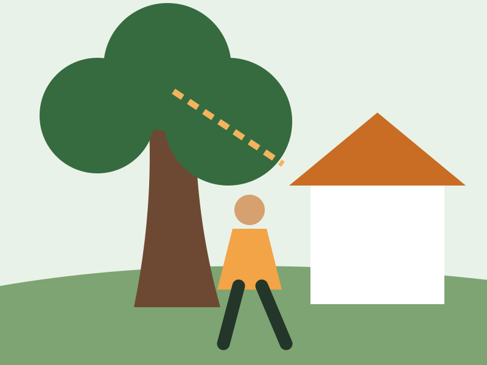
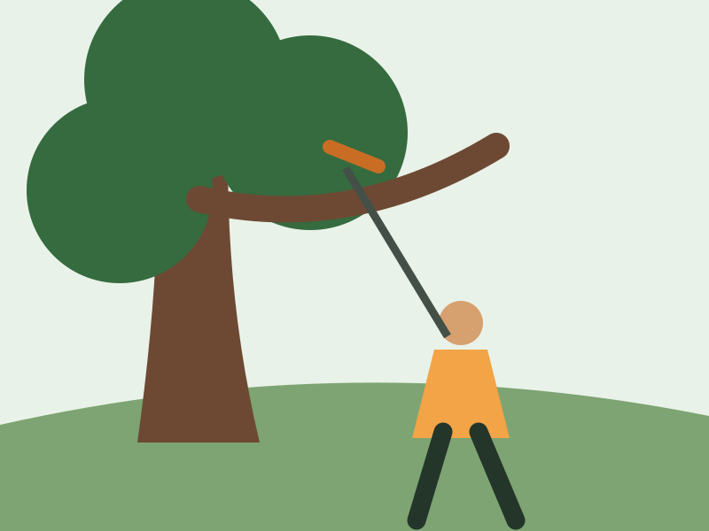
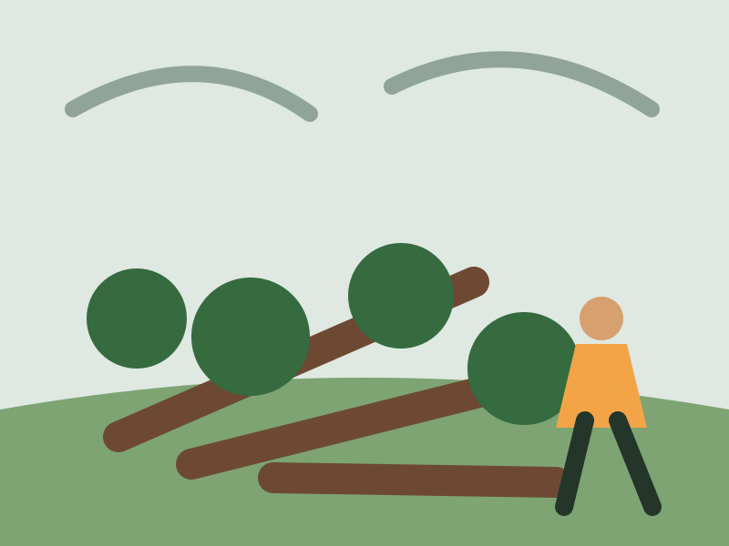

Tree Removal
Planning for damaged, declining, or hazardous trees near structures.
Service gallery
These original illustrations show the type of work offered without presenting stock photography as completed Apple Creek jobs.

Planning for damaged, declining, or hazardous trees near structures.

Selective trimming for clearance, structure, and damaged growth.

Assessment and cleanup planning for fallen limbs and storm debris.